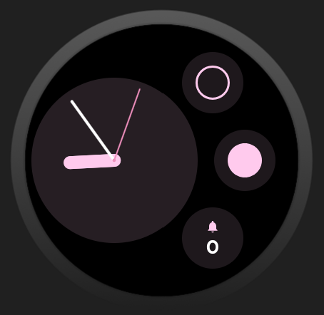
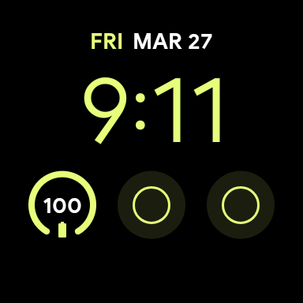

Work follow-ups
Keep short work reminders visible for tasks like calling HR, replying to Lena, or checking the salary report before the day slips away.
Prospective memory is the ability to remember to do something in the future: call HR after a meeting, get back to Lena before the day ends, or check the salary report before payroll closes. It fails most often not because the task is hard, but because the cue arrives at the wrong moment.
Prospective memory is different from remembering facts or recalling a past event. It is remembering to act later. In daily life, many of these tasks are small, repeated, and easy to lose: did I already take my medication, do I still need to send that message, did I lock the car, did I finish today's habit?
These tasks are vulnerable because they compete with whatever currently has your attention. If the cue is weak, delayed, or buried in a long notification list, the intention can disappear.
An external cue reduces the amount of memory work your brain has to do. Instead of rehearsing the intention internally, you offload it into the environment.
That is why a note on the door works differently from a reminder notification you dismiss. One is still there when the action moment arrives. The same logic applies to a watch face: it sits in a place you naturally glance at throughout the day.
For many everyday tasks, the ideal reminder is not a loud interruption. It is a quiet, always-available signal.
Keep short work reminders visible for tasks like calling HR, replying to Lena, or checking the salary report before the day slips away.
Track repeated yes/no actions such as medication, hydration, or a recurring admin task where a persistent cue beats a one-time notification.
Ideal for tasks that are easy to forget within minutes, especially when a normal phone reminder arrives too late or gets dismissed too quickly.
Took vitamins is better than Health.A reminder tool fails when interacting with it is harder than remembering. For prospective memory support, friction matters more than features.
Suppose you finish a meeting and need to remember to call HR before the office closes. A normal notification is easy to swipe away and then forget. A paper note works, but it is not always with you. A watch complication is different: each wrist glance gives you the state again. If it still says ON, the task is pending. When you finish the call, one tap clears it.
That is the idea behind Toggle Reminder, a Wear OS reminder app built around complications, tiles, multiple independent toggles, and optional auto-reset scheduling for everyday task reminders and prospective memory support.
In practice, the app works by keeping a small, persistent state on the watch face instead of relying on a notification that disappears. That makes it useful for work reminders like calling HR, checking the salary report, or getting back to Lena because the cue stays visible until you explicitly clear it.

